Instalador
LimpaOne-Setup.exe
- Atalho no Menu Iniciar (e na Área de Trabalho, se quiser)
- Aparece em “Aplicativos instalados” para desinstalar
- Ideal para o seu computador do dia a dia
Novo: atualizar e instalar programas em lote, otimização do Windows e drivers
O LimpaOne junta limpeza, desinstalador, atualizador de programas, otimização e recuperação de arquivos num único app para Windows — gratuito de verdade, de código aberto e sem nenhuma pegadinha.
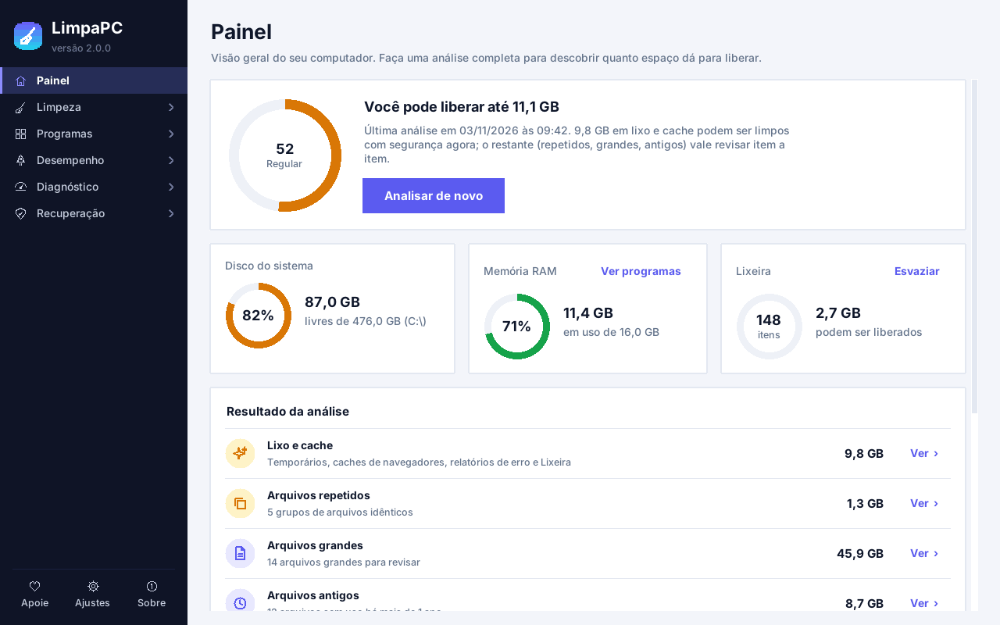
Recursos
O menu do app é dividido em cinco áreas. Comece pelo Painel: uma análise completa em um clique, com nota de saúde do PC e o botão “Limpar recomendado”.
Libere gigabytes sem medo de apagar o que importa.
Temporários, caches de navegadores e programas, Windows Update, miniaturas, relatórios de erro e Windows.old.
Histórico, cookies e documentos recentes — vêm desmarcados; você decide o que apagar.
Só entradas comprovadamente quebradas, com backup .reg automático para desfazer.
O tamanho de cada pasta e um gráfico por tipo de arquivo. Descubra o que enche o disco.
Duplicatas comparadas byte a byte (sempre fica uma cópia) e o que não é aberto há anos.
Remova, atualize e instale — tudo pelo mesmo lugar.
Mostra o último uso de cada programa, remove as sobras depois e tem desinstalação forçada para os quebrados.
Tire os apps que vêm de fábrica e você nunca usa. Dá para reinstalar pela Store.
Veja o que tem versão nova e atualize tudo de uma vez pelo winget, o gerenciador oficial do Windows.
Escolha seus programas, instale todos juntos e gere um instalador .bat para levar a outro PC.
Desative o que abre sozinho com o Windows e deixa o boot lento. Reversível a qualquer momento.
Ajustes seguros para o PC responder mais rápido.
O que está consumindo memória agora, com opção de finalizar programas e liberar memória ociosa.
Ajustes de desempenho, privacidade e conveniência — cada um pode ser desfeito com um clique.
TRIM nos SSDs e desfragmentação nos HDs, usando o otimizador do próprio Windows.
Encontra dispositivos com problema e busca drivers só no Windows Update, com backup antes.
Desativar hibernação, limpeza profunda do Windows Update, limpar DNS e outros atalhos úteis.
Conheça seu computador e meça o que importa.
A ficha técnica completa: processador, memória, vídeo, discos com a saúde de cada um, rede e bateria.
Mede processador, memória e disco em cerca de um minuto e dá uma nota para o seu PC.
Ping, download e upload, com histórico para acompanhar a sua conexão.
Apagou sem querer? Ainda dá tempo.
Veja o que está na Lixeira com o local original e restaure com um clique.
Lê a tabela NTFS para achar arquivos apagados de vez e mostra a chance de cada um. Em pendrives e cartões, busca por assinatura (fotos, vídeos, PDFs, Office).
Apaga de forma irreversível, sobrescrevendo o conteúdo — ideal antes de vender ou doar o PC.
Por dentro do app
Clique em um print para ampliar. Use as setas do teclado para navegar.
Painel e análise completa
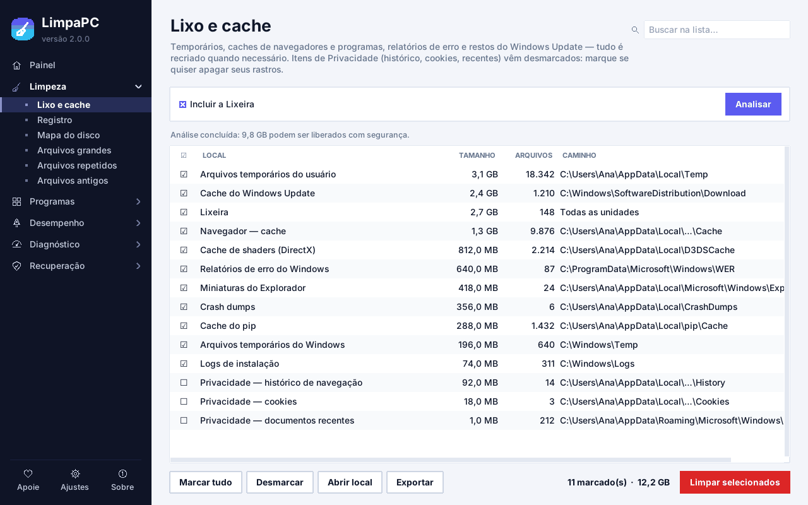
Lixo e cache
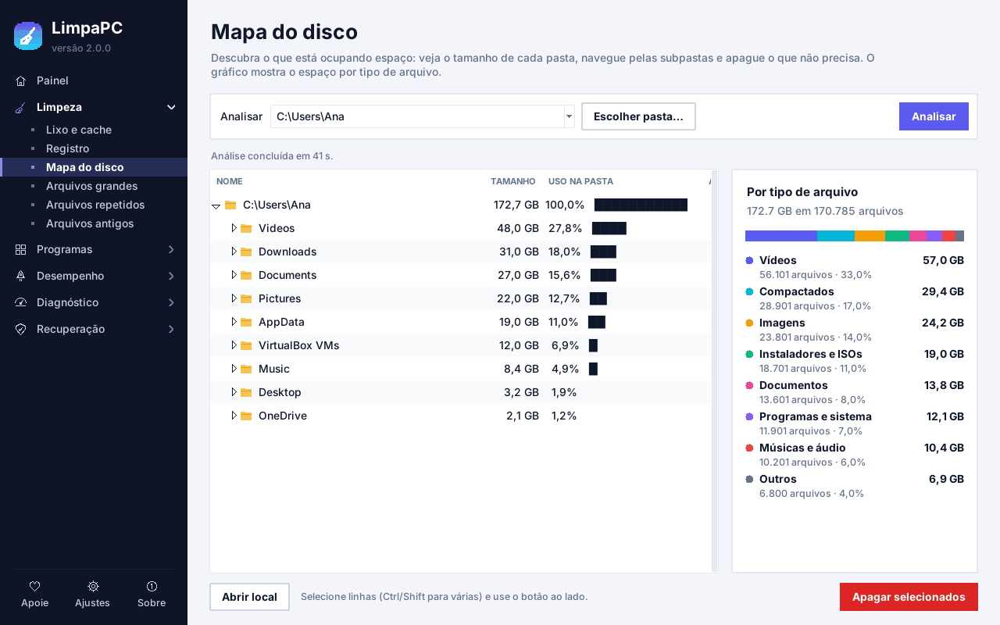
Mapa do disco
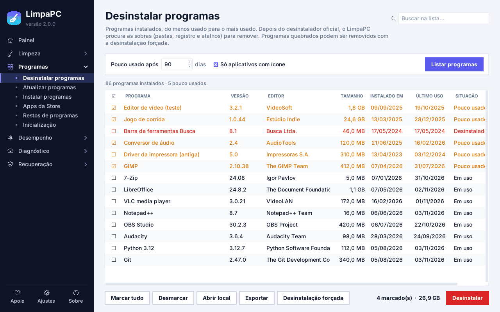
Desinstalador
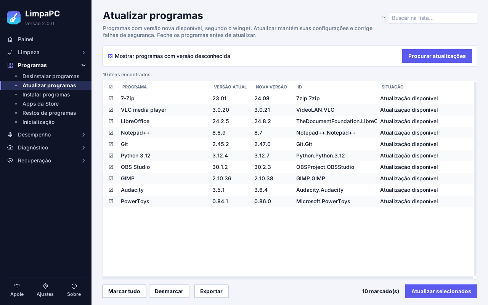
Atualizar programas
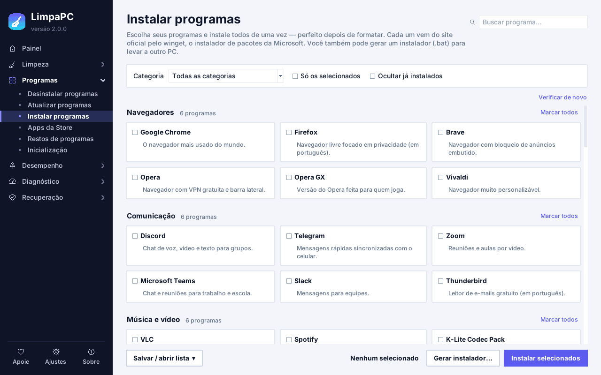
Instalar em lote
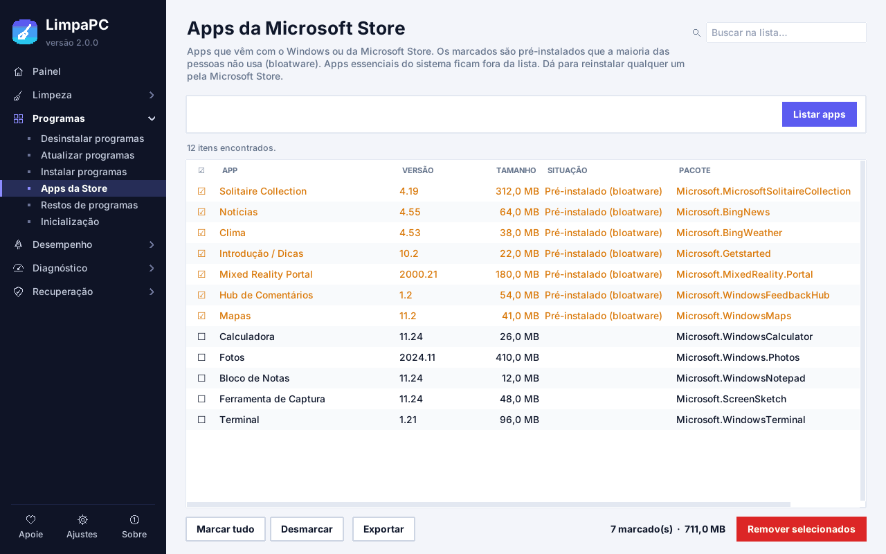
Apps da Store
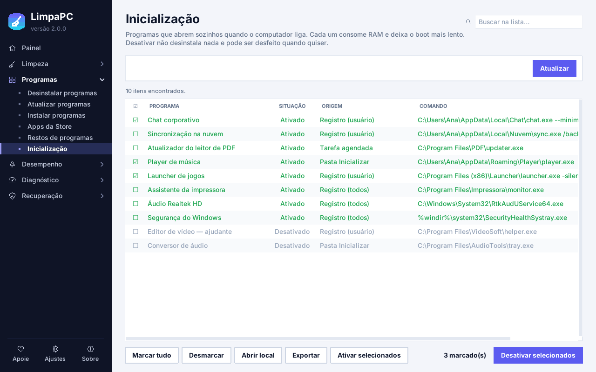
Inicialização
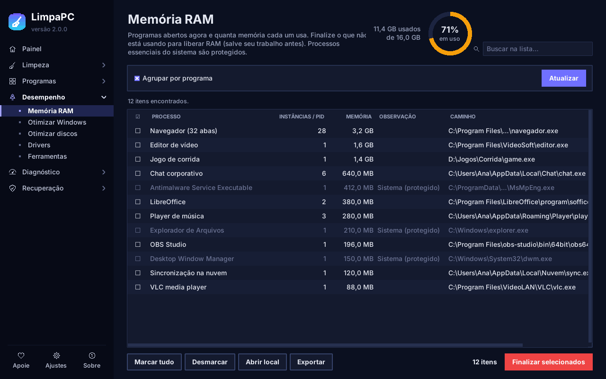
Memória RAM · modo escuro
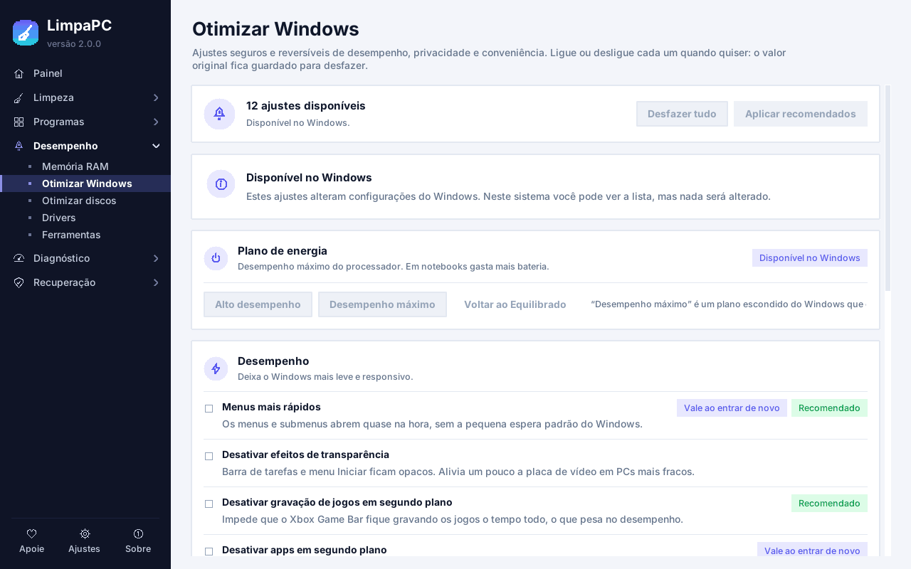
Otimizar Windows
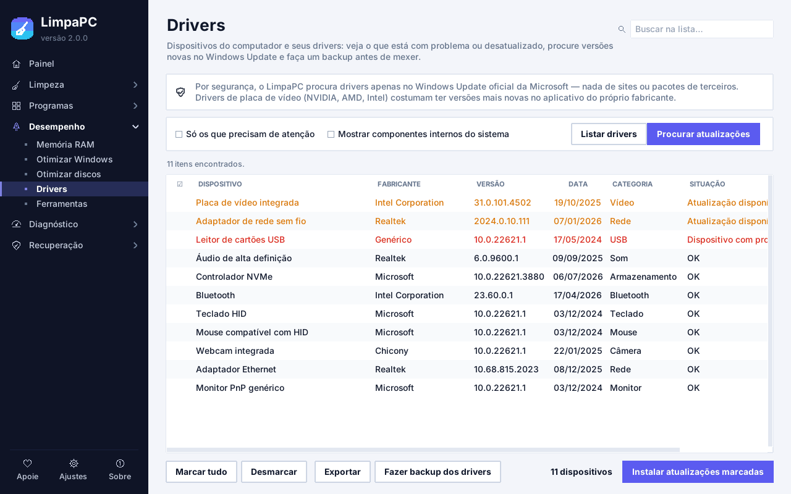
Drivers
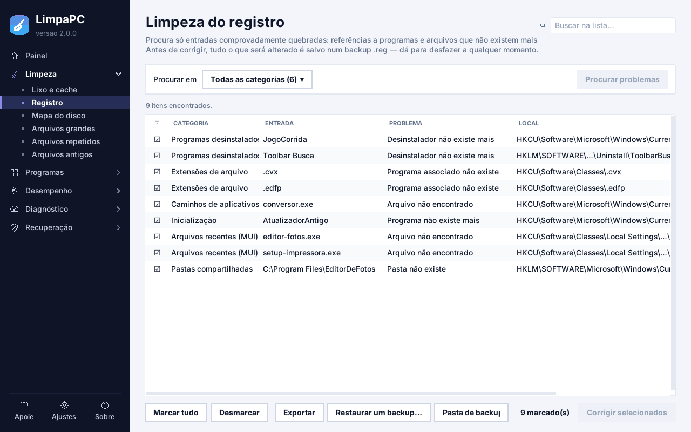
Limpeza do registro
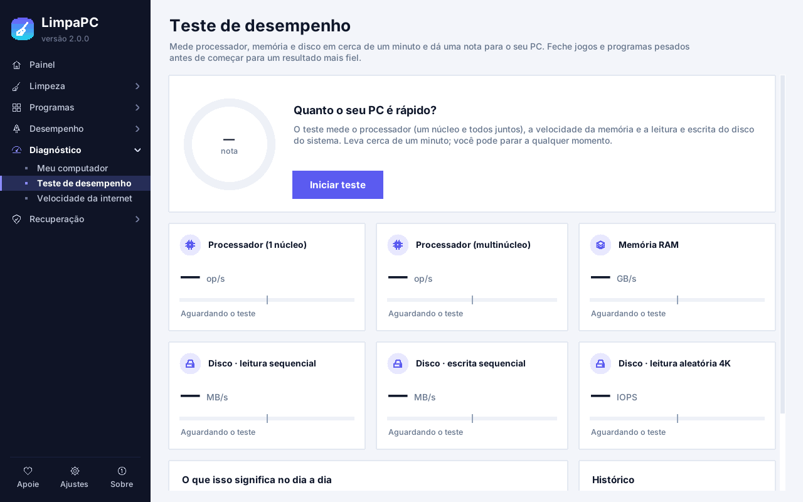
Teste de desempenho
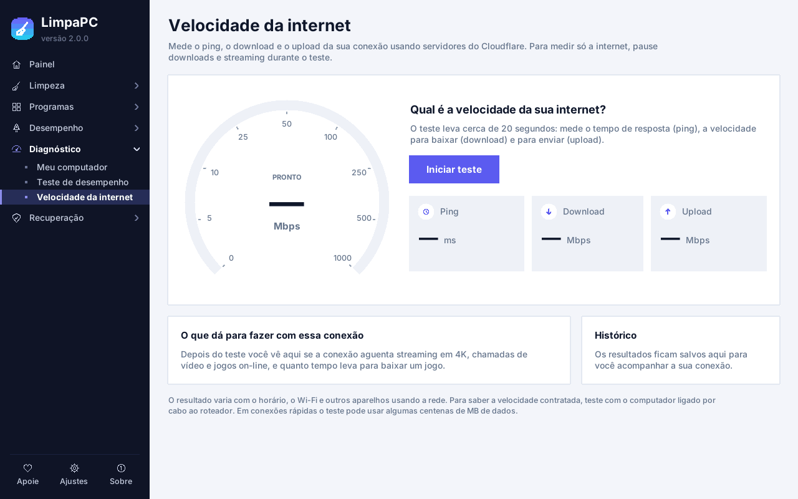
Velocidade da internet
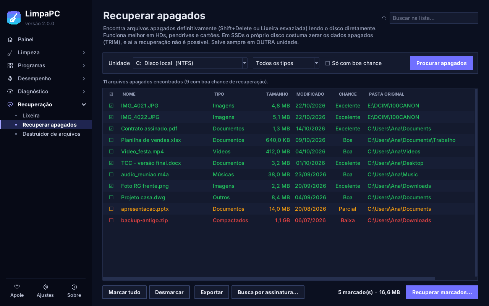
Recuperar apagados · modo escuro
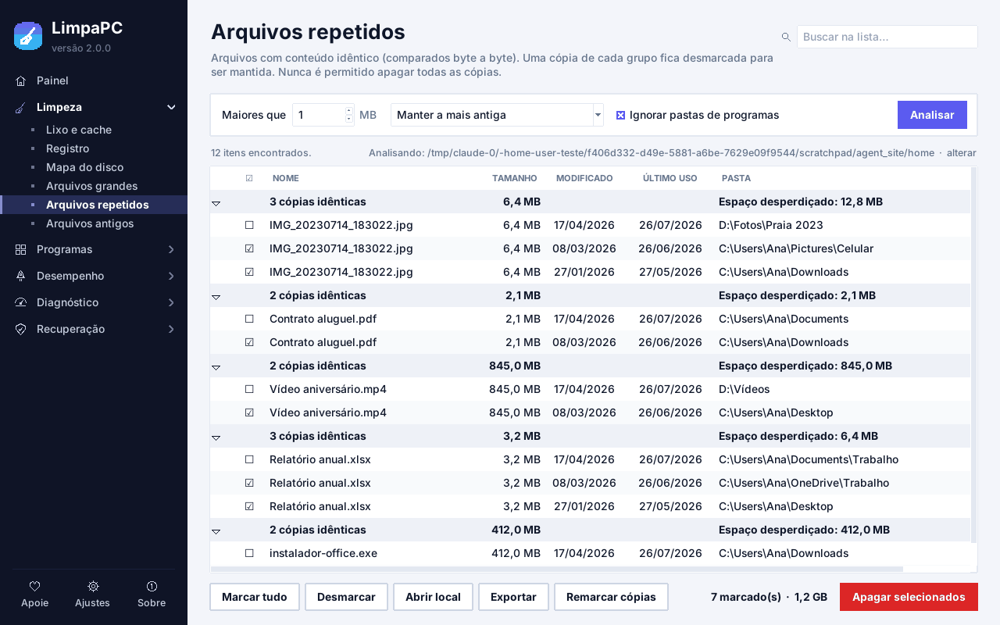
Arquivos repetidos
Download
As duas versões têm exatamente os mesmos recursos e são geradas automaticamente a partir do código aberto.
LimpaOne-Setup.exe
LimpaOne.exe
Usa Linux ou macOS? O LimpaOne também roda com Python — veja as instruções no repositório. Algumas funções são exclusivas do Windows.
Comparação
Para fazer tudo o que o LimpaOne faz, normalmente você juntaria um limpador, um desinstalador, um analisador de disco, um atualizador de programas, um otimizador e um recuperador de arquivos — cada um com as próprias regras.
| Critério | LimpaOne | Vários programas separados |
|---|---|---|
| Quantos programas instalar | 1 | 5 ou mais |
| Todos os recursos grátis, sem “versão Pro” | Sim | Varia de programa para programa |
| Sem anúncios e sem ofertas de upgrade | Sim | Varia |
| Código aberto, para qualquer um conferir | Sim, licença MIT | Varia |
| Sem coleta de dados | Nada sai do PC | Cada um com sua política |
| Recuperação de arquivos apagados | Incluída | Geralmente outro programa |
| Kit pós-formatação (instalar tudo de uma vez) | Incluído | Geralmente outro programa |
| Uma interface e um histórico de ações | Sim | Uma por programa |
| Atualizações | Aviso no próprio app | Uma por programa |
Comparação genérica, sem referência a produtos específicos. “Varia” significa que depende do programa escolhido.
Segurança e privacidade
Um limpador precisa ser cuidadoso. O LimpaOne foi pensado para que nenhum clique seja irreversível sem você saber.
Arquivos apagados vão para a Lixeira, então dá para voltar atrás.
Windows, Arquivos de Programas, raízes de disco e sua pasta de usuário são bloqueadas.
Registro e drivers ganham backup antes de qualquer mudança; ajustes do Windows são reversíveis.
Antes de agir, o app mostra quantos itens e quanto espaço estão envolvidos.
Tudo o que foi feito fica registrado num arquivo de histórico no seu PC.
Sem conta, sem telemetria. A internet só é usada para atualizações e downloads que você pedir.
Dúvidas frequentes
É normal em programas novos que ainda não são muito baixados. Clique em Mais informações e depois em Executar assim mesmo. Se preferir conferir antes, todo o código está aberto no GitHub e cada versão é gerada automaticamente a partir dele.
Sim. Todos os recursos são gratuitos, sem anúncios, sem cadastro e sem “versão Pro”. O código é aberto, sob a licença MIT. Se o app te ajudar, você pode apoiar o projeto — mas é opcional.
Não para limpar, otimizar ou recuperar arquivos. A internet só é usada para verificar se há versão nova (dá para desligar nas Configurações), para atualizar e baixar programas pelo winget, buscar drivers no Windows Update e no teste de velocidade.
Sim, todas as funções de limpeza e otimização funcionam em SSD — e o otimizador de discos aplica o TRIM, que é o recomendado para eles. Já a recuperação de arquivos apagados é limitada em SSDs: o próprio disco costuma zerar os dados apagados (TRIM). O LimpaOne detecta o SSD e avisa. Em HDs, pendrives e cartões as chances são bem maiores.
O app foi feito para evitar isso: pastas do sistema são bloqueadas, arquivos vão para a Lixeira por padrão, itens de privacidade vêm desmarcados, a limpeza do registro faz backup e tudo pede confirmação. Ainda assim, revise sempre a lista antes de apagar.
Para a maioria das funções, não. Algumas pedem permissão de administrador, como ler o disco diretamente para recuperar arquivos ou alterar itens que valem para todos os usuários. O app avisa quando for preciso.
Para o seu PC, o instalador é mais prático (atalhos e desinstalação pelo Windows). A portátil é um único arquivo que roda sem instalar — ótima para levar no pendrive.
Fazendo uma doação, deixando uma estrela no GitHub, relatando problemas e indicando o LimpaOne para quem precisa. Veja as opções logo abaixo.
Apoie o projeto
O LimpaOne não tem anúncios nem vende dados. Se ele te poupou tempo ou espaço, considere apoiar o desenvolvimento. Qualquer valor ajuda a manter o projeto vivo e gratuito.
Baixe grátis para Windows 10 e 11. Leva menos de um minuto.